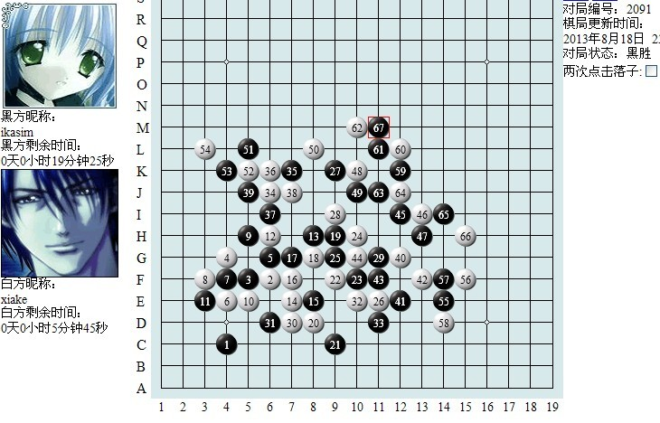
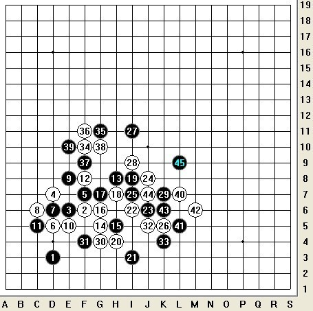
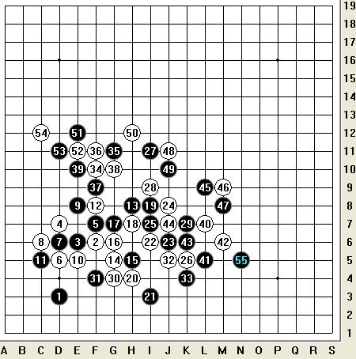
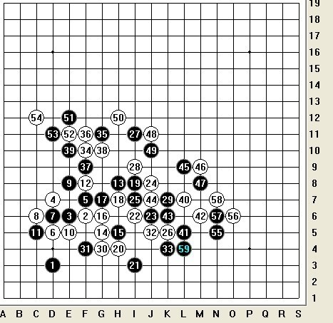
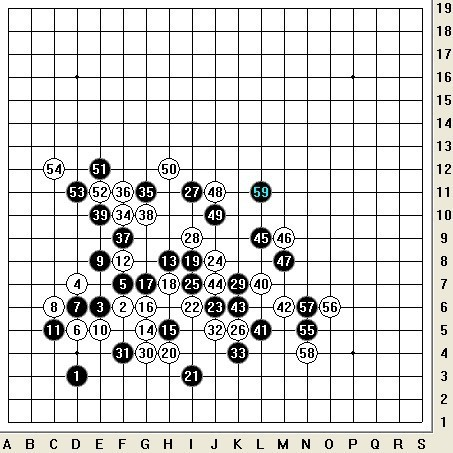
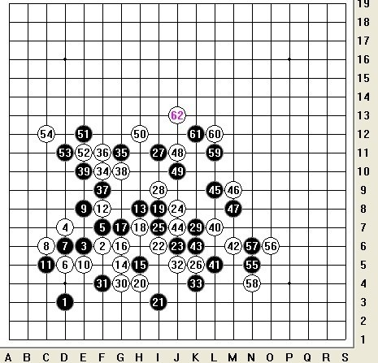
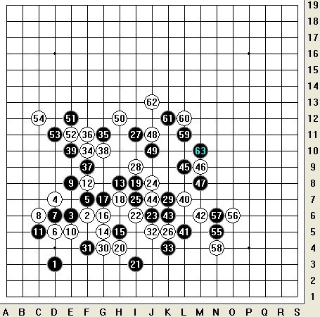
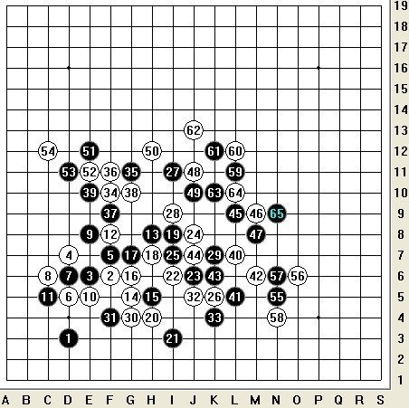

风车战术-声东击西------全盘连接-攻与势的转换
#1 风车战术-声东击西------全盘连接-攻与势的转换 作者：蓝天蓝 发表时间：2013-10-16 12:57:37
风车战术-声东击西------全盘连接-攻与势的转换
作者：【圣棋盟】ikasim
圣棋盟第五轮3台棋评
对局者：【神话】xiake VS 【圣棋盟】ikasim {交换}
对局链接：
http://game.freewzq.com/offlineDisplayGame.html?html=6976382&id=2091
在写棋评前首先要感谢我的社团圣棋盟家族多年来对五子棋棋手的精心培养，感谢族长以及家族管理人员对比赛的默默付出。最后，感谢本次比赛的主办方，以及自由五子棋慢棋平台对比赛的精心组织，衷心祝愿今后五子棋发展得越来越好，自由五子棋慢棋平台、一手交换规则也发展得越来越好，更上一层楼。
想下好一手交换也并非易事，有时候很多棋就想是在拼内力，棋感、思路、大局观等等都很重要。你要在无数种行棋方法中寻找最有效的行棋要点。有禁手规则下行棋一般不能随便脱先，而一手交换往往先后手不断转换。一手交换行棋往往可以飘逸、灵动。19路棋盘三百六十一个点，永远无法穷尽变化。
咳咳，写在前面的话说完了，下面开始正文。总的来说这盘棋自己走的还算满意。全盘如下：

首先说，作为黑棋我第7手避开定式，目测这个第7手应该没什么人走，我个人不太喜欢定式，所以希望走走中盘和对棋的理解，同时我想试探下对手的水平，于是我之后也故意下了一些我认为可以出乎对手意料的走法来试探对手的着法。因此前43手都不是重点，具体便不一一细说，比如第13手我采用占外势加放棋策略，让对手进攻（我认为对手肯定攻不出，最后也验证了我的想法是正确的），使得自己最后占到外势。
重点从我开始反击的第45手说起！经过长考我落下的第45手，有效的阻断了白棋的路线要点，同时创造了自己的外势空间。如下图：

然而这黑45只是一个新的开端，真正激烈的好戏还在后头。之后对手白棋也想争夺外势，于是白46、黑47正常，而对方的第48和50手我觉得不好，白棋这2手有点急于夺取外势而没注意到其实右边白方略为空虚。我的49、51占最强要点应对，52-54正常，接着我落下了我改变局势的第55手，如下图：
]
我这黑55一落，大家应该可以看出局面上优势已经偏向黑棋，盘面右边白棋子力不足，右下方黑棋有较为明显的优势，之后对方的白56比较正常，完全在我的意料之中，之后我便毫不犹豫的下出我的57，经过当时拆解，如果对方白58直接挡在活2上面的话就白必败，黑可以再下方直接做棋取胜，我等着看对方会不会中招，黑胜招法如下图：

参考图
如上图所示，这样的话便黑必胜了，然而对手并没有中招，选择了最结实的挡活二下方下面的58，然后我结合棋感和大局观落下了我认为最优的59，我认为此黑59隐藏的后续连接最多，四通八达，可以引导整个大局，也为最后的胜利再次埋下伏笔，如下图：

之后对方的白60正常占外势思维，我的黑61继续占最强要点，诱导了对方落下了他的必败白62，白62又想占外势，其实却是必败，如下图：

白62之后，右边黑棋便可以做必胜型，我先想到了一个较好的黑63便下了，但下了便后悔了，因为我马上又想到了必胜的黑63，并拆解出了必胜，胜招如下图：

参考图
上图的63确实必胜了，大家有空可以拆下，而我实际落下的是第二强的白63（K10位置），正当我落子后立马后悔之际，对方的64又给了我惊喜，这次我便毫不犹豫的抓住了胜机，落下我一眼看出的必胜65，并当场暴力终结，确认黑棋已胜定，结束了这场没有硝烟的战斗，如下图：

如上图，对方的白64看上去直接挡住我的一个活二并自己形成一个活2和一个眠2，其实是个大败笔，忽略了黑棋59-61的斜线和55-57的竖线的连接以及一连串的后续连接，白64只能走M10这个唯一的要点截断黑棋恐怖的连接，才可以防住此局面。
总的来说，这盘棋，总共下了接近70手才结束，对手还是有一定的实力。对手后盘十分着重外势，但对手在棋感以及局面的子力把握、大局分析等方面还是有所欠缺，最终为我的胜利埋下了伏笔。而我自认为我从第45手开始一直到第61手以及最后定胜负的第65手都步步最优，下得无懈可击，个人非常满意，就是第63手下太快了，没下出最强的必胜招法，虽然没影响最后结果，还是觉得自己应该反省下，不要一想到很好的点就急着下，其实再想下就能想出更好的可以胜定点。